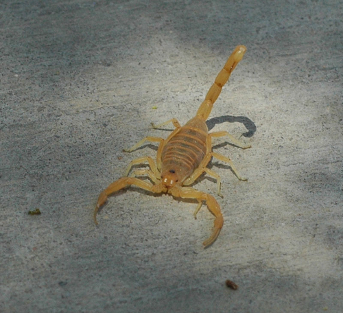

Home
West
Bark Scorpion

FACTS
If threatened, all scorpions will attack with the stinger at the end of their tails
SAFETY
Death is extremely rare from any scorpion sting If sting results in physical symptoms, save the specimen and see a doctor